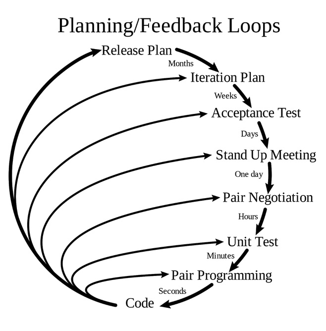

Agile Frameworks (noch unvollständig)
Begriffssammlung
Themenbereich
Agile Frameworks
Synonyme
-
Englisch
Scrum
Definition
Scrum ist eine Management-Methode im Umfeld der »agilen Methoden zur Steuerung der Abarbeitung von Aufgaben, bei der kleine selbstorganisierte Teams in iterativ-inkrementellen, zeitlich gleich langen Bearbeitungsschritten die Aufgaben paketiert abarbeiten.
Erläuterung
Scrum wird im »Scrum-Guide beschrieben, der von den beiden Scrum-Entwicklern Ken Schwaber und Jeff Sutherland herausgegeben und gelegentlich überarbeitet wird.
Bereits 1986 wird der Begriff Scrum in einem Artikel von Hirotaka Takeuchi und Ikujiro Nonaka (Harvard Business Review, The New New Product Development Game) erwähnt. In diesem Artikel wird die Mannschaftssportart Rugby als Metapher für eine Vorgehensweise zur Produktentwicklung verwendet. Deshalb ist der Begriff Scrum keine Abkürzung und wird nicht groà geschrieben.
âRugbyâ und âScrumâ als Metaphern passen nur sehr beschränkt, da im Spiel Rugby zwei Teams mit gegensätzlichen Zielen und Absichten gegeneinander spielen, während in Scrum ein Team auf ein gemeinsames Ziel hinarbeitet.
Scrum-ähnliche Vorgehensweisen zum Management der Abarbeitung von Aufgaben bzw. zur Entwicklung von Produkten werden mindestens seit den frühen 1990er Jahren z. B. in der Automobilindustrie verwendet.
Hauptelemente von Scrum sind »Scrum-Artefakte und »Scrum-Ereignisse.
Scrum beschreibt drei »Rollen zur Abarbeitung der Aufgaben bzw. zur Entwicklung eines Produkts: »Product-Owner, »Scrum-Entwicklungsteam und »Scrum-Master. Zusammen bilden diese ein »Scrum-Team.
Scrum beschreibt nur einige Aspekte des Managements der Abarbeitung von Aufgaben. Weitere Aspekte müssen von Scrum-Nutzern ergänzt werden, z. B. Entwurf, Entwicklung und Test.
Beispiele
-
Begriffssammlung
Themenbereich
Agile Frameworks
Synonyme
Extreme Programming, eXtreme Programming, Extremprogrammierung
Englisch
XP, Extreme Programming, eXtreme Programming
Definition
XP ist eine Vorgehensweise aus der Gruppe der »agilen Methoden zur iterativen, flexiblen und kollaborativen Entwicklung von Software, bei der kleine Teams durch Anwendung weniger, aber extrem konsequent umgesetzter und aufeinander abgestimmter »Methoden, »Techniken, »XP-Praktiken und organisatorischer MaÃnahmen die Software entwickeln.
Erläuterung
Kerndokument von XP ist das Buch Extreme Programming Explained: Embrace Change von Kent Beck, veröffentlicht 1999. Es liegt in deutscher Ãbersetzung vor [Be00].
XP wurde erstmals ab 1997 angewendet und ist eine der Vorgehensweisen, die wesentliche Aspekte der »agilen Methodenund des »agilen Manifests beeinflusst haben.
Hauptelemente von XP sind die »XP-Werte, die »XP-Prinzipien und die »XP-Praktiken. Darüber hinaus gibt es »XP-Rollen.
XP beschreibt nur einige, überwiegend technische, sowie wertschöpfende Aspekte der Software-Entwicklung. Weitere Aspekte müssen von XP-Nutzern ergänzt werden, z. B. Projektmanagement.
XP ist für Teams von 5 bis 12 Personen ausgelegt.
XP erfordert die unmittelbare Teilnahme der»Kunden (XP) während der gesamten Projektlaufzeit. Durch diese Teilnahme und kurze »Iterationen sollen Entwicklungsrisiken minimiert werden.
XP-Abläufe werden oft durch dieses Diagramm visualisiert:

(Quelle: DonWells, via Wikimedia Commons, Creative Commons BY-SA 3.0 Unported)
Ein Schwerpunkt von XP ist eine gute Lebensqualität der Softwareentwickler, sowie eine gute Arbeitsatmosphäre im Team.
XP als vollständig umgesetzte »agile Methode ist seit mehreren Jahren nur noch sehr begrenzt relevant.
Viele »XP-Werte, »XP-Prinzipien und »XP-Praktiken sind von anderen »agilen Methoden aufgegriffen worden, teils unverändert, teils weiterentwickelt.
Beispiele
.
 
 
 
 
 
 
 
 
 
 
 
 
 
 
 
 
Der gesuchte Begriff
ist zur Zeit in Bearbeitung und im Web noch nicht verfügbar.